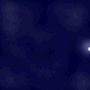
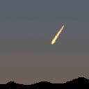

![[Animation]](move.gif) 夜空を眺めていると、水平線近くに移動する光点を発見。
双眼鏡で見てみるとセスナ機だった。「なーんだ」と思っていると、
その後を追っかける３個の光点が双眼鏡の視野に入ってきた。
「これがＵＦＯか！」としばらくは思ってた。
夜空を眺めていると、水平線近くに移動する光点を発見。
双眼鏡で見てみるとセスナ機だった。「なーんだ」と思っていると、
その後を追っかける３個の光点が双眼鏡の視野に入ってきた。
「これがＵＦＯか！」としばらくは思ってた。 数年して、飛行機を見ていると（名大のそばに航路があるので 毎日見ることができる）、飛行機とその向きによっては、チカチカしない ライト（しかも明るい）だけ見えることがあるとわかった。
感想：「そうかー、なるほどねー」
最終更新日 1999年4月17日
その１
数年して、飛行機を見ていると（名大のそばに航路があるので 毎日見ることができる）、飛行機とその向きによっては、チカチカしない ライト（しかも明るい）だけ見えることがあるとわかった。
感想：「そうかー、なるほどねー」
その２
 夜空を眺めていると、天頂付近に薄雲を通して高速で移動する光点を発見。 サーチライトか？とも思ったが、見るからに明るい光を雲を通して 見ているようである。しかも飛行機にしてはスピードが異常に速い。 ほんの２−３０秒で空を横切って消えていった。
もっとも可能性がありそうなのがセスナ機だが、やや速いので多少の 疑問は残る。翼の先のチカチカは、薄雲を通してなので見えなくても 不思議はない。この可能性は８０％ぐらいかな。
次の可能性は流星。しかし流星だとするとかなりの大火球になるので、 この可能性は１０％ぐらいかな。
感想：「これは少し Unidentified のままだな」
注意：大きくて明るい流れ星を火球（かきゅう）と言います。
簡単に言えば、隕石になる手前のものですね。
その３
望遠鏡で星を見ていると、光の群れが視野を横切った。 「うわっ、ＵＦＯの大編隊！」と思って肉眼で見ると、逆Ｖ字で 編隊飛行する光点が見える。「こ、これは、ホンマもんの空飛ぶ円盤か？」と 思える。こんなものは普通は（少なくともそれまでは一度もなかった） 見えないので、かなり信頼性がありそうだったのだが、
・・・・・
実は鳥の群れでした。鳥は夜飛ぶこともあるらしい。で、鳥が 町の明かり（つまり、街路灯。名古屋の夜は明るい）に照らされて 白く光ってただけだったということ。
感想：「幽霊の正体見たり、・・・だね」
その他のまぎらわしい目撃談１
 夕方、西の方にオレンジ色の葉巻型ＵＦＯがあった。ゆっくり地平線の 方に進んでいった。正体は・・・・
飛行機雲。
飛行機雲は空気の湿度によって長く延びたり、すぐ消えたりします。 遠くの飛行機は見えないけれど、飛行機雲は夕日に光ってよく見える。 しかも早く消えるタイプのものだと、ちょうどオレンジ色の棒のように 見えます。これは双眼鏡で「確認済み」。
その他のまぎらわしい目撃談２
昼間、明るく輝く光点が動いているのが見える。しばらくすると 消えてしまった。正体は・・・・
飛行機。
飛行機の翼や胴体は意外とテカテカしてます。それがちょうど太陽の光を 反射する位置（と向き）にあると、鏡のように光を反射することが あります。この場合角度が重要です。夕方、名古屋に降りてくる飛行機を 見ると、まれに（１００回に１回ぐらいかなあ）夕日を反射して、まぶしい くらいに光っていることがあります。角度が変わると光らなくなります （鏡と同じ）。
金縛り
大学院生の頃でしたか、１回だけ体験したことがあります。 何だかすごく忙しくて夜遅くまで仕事をした時、なかなか寝付かれずに 眠るまでずいぶん時間がかかった日がありました。その夜、 ふと目覚めると体の自由が利かない状態になってました。その時には すでに「金縛りとは、脳が起きてても肉体が寝ている状態」ということを 知っていたので、感覚を分析する余裕がありました。その感じは
「重力が大きくなって手足が重く動かせない」
「上から押さえられて体が布団にめり込む」
ような感覚でした。もちろん幽霊などは見ません。しばらくすると 体が動くようになって金縛り体験は終わり。なかなか面白い体験でした。 皆さんも夜遅くまで仕事（頭脳労働が良い）をして、すぐ寝ると 体験できるかもしれません。一度はしても良いですよ。
感想：「ふーん、なるほど。面白い。」